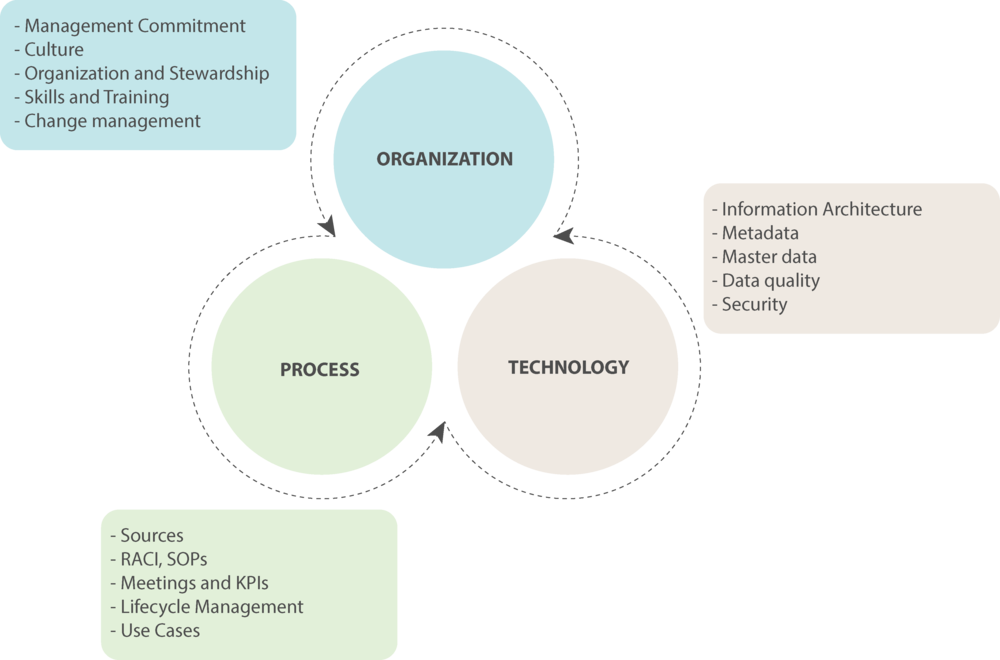

Data Governance Components – 1. Organization Sphere

In the previous blog on “Framework for Data Governance,” I discussed and introduced the three spheres of data governance. This blog focuses on the first sphere called “Organization Sphere” and tries to explain in detail the factors and levers in this sphere
Organization refers to the people part of the enterprise and the part that I consider most important in the DG journey. This is the “Who” part of the framework. The success of any efforts including data governance is based on the readiness of the organization. These efforts are implemented at the grassroots levels where the rubber meets the road, but the commitment from the top leadership and sponsors directly impacts the success of the efforts. The commitment from the management and readiness of the organization to embrace the need and change are the key areas that enterprises need to focus on when starting the data governance journey.

Management Commitment
Any successful initiative needs buy-in and commitment from the stakeholders. In the case of Data Governance, almost all levels within the organization are stakeholders. Since there are multiple levels of roles involved at different responsibility levels, the commitment from top-down makes a huge difference in the success and failure of the DG initiative.
DG is often considered a journey and process rather than a project which as of end date and clear physical deliverable. This can be a long process with no clear monthly/weekly deliverable and this needs to be acknowledged by the leadership team. Once this is understood and management and senior stakeholders show the commitment there is a good chance of success of the DG program
Culture
There are few components of the DG journey such as collaboration which play an important role in the success of the DG program. These factors are part of organizational culture which plays an important role. Governance is not a one-person job and needs a more collaborative environment. Even with the commitment from management, the work of the actual DG organization needs to be collaborative. This collaboration cannot be achieved in a day or a week but is largely dependent on the overall culture of the organization
Organization and Stewardship
There are very few DG programs where there are dedicated roles for DG organization. Most of the time these roles have to be filled in by existing data or business teams. Roles such as Data Stewards, domain stewards, and DG council members are filled by existing people in the organization. This organization structure, clearly defined roles, and responsibility are the ability of the existing team to carry out these roles is a key part of DG success
Skills and Training
Data Governance stewardship and other roles need certain skills which data organization’s staff members might not have. This calls the need for training and upskilling the DG team in those areas. The training should not be ignored and should be an ongoing process rather than a one-time training to continuously upgrade the skills of the DG organization members.
Apart from the skills and training needs of the DG organization, there is a need to update the skills of the rest of the organization too. DG adoption is largely dependent on people understanding the need and value of DG and that can be achieved through active pieces of training
Change Management
The importance of change management can never be overstated in any initiative that touches and impacts almost everyone and almost every process in the IT organization. Change management plays an important role in the successful implementation and long-term adoption of the DG in the organization.
—
Above was the description of the key areas within the organization and why and how they play into the bigger picture of Data Governance. The other two spheres process and technology are in sperate blogs.